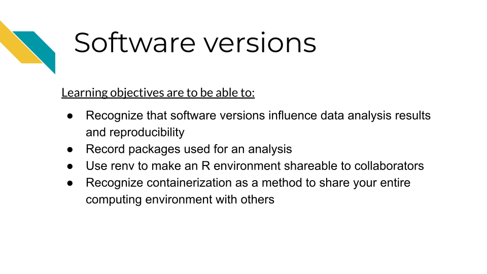
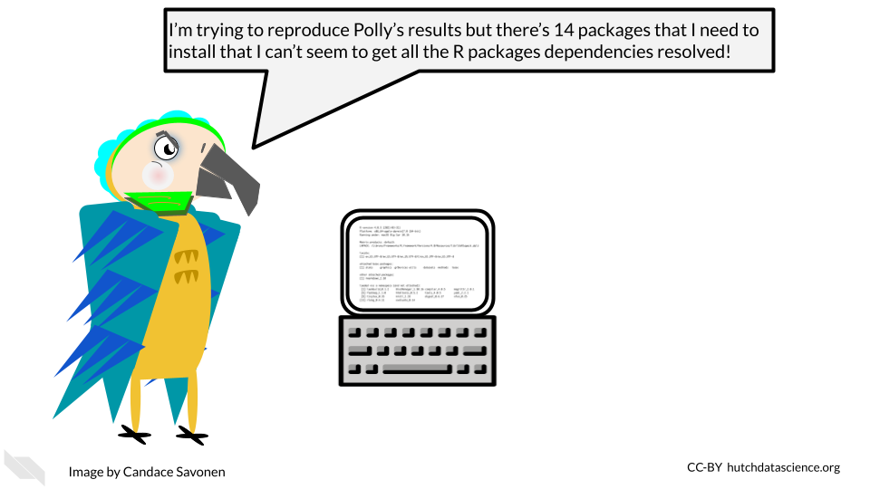
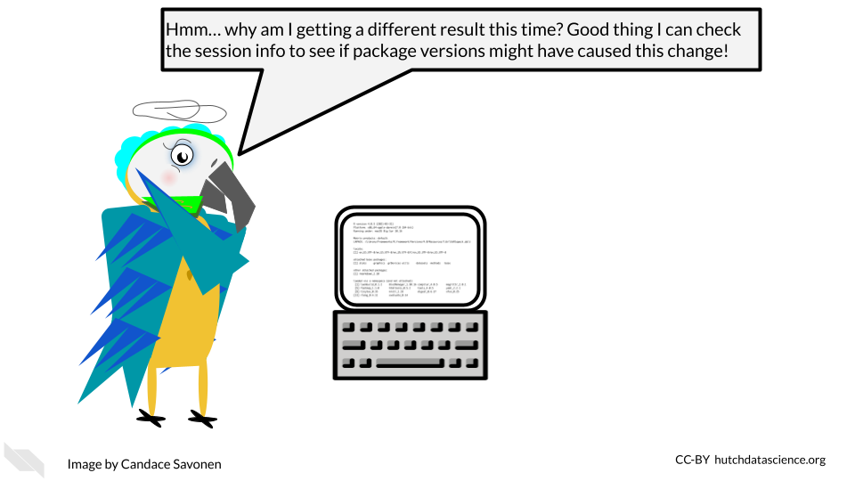
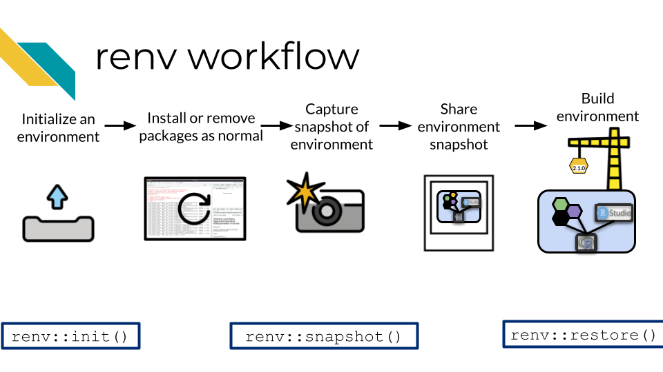

Chapter 9 Software versions
9.1 Learning Objectives

As we discussed, reproducibility is on a continuum, meaning that it can range from being impossible to very easy to reproduce any given results. Some results can be effectively impossible to reproduce if there are too many barriers and set up needed to re-run the analysis. One of the most common barriers is the computing environment used run the analysis.
computing environment - All the relevant pieces of software and their dependencies that were used on a computer at the time that an analysis or other project was run
9.2 No two computers are the same
A computing environment not only consists of the direct software that we use to analyze data, but all of the other software that our main pieces of software require to install and run properly.
As we use our computers daily for work, we are constantly installing, updating, and removing software packages. Sometimes our computers do this automatically without us knowing. These software packages interact with and depend on each other, meaning it can be quite frustrating to try update even a single piece of software if it exists in a tangled mess of software dependencies. Computer scientists sometimes call this “dependency hell”.

As developers and maintainers of software continue to make updates and fixes to the software, the developers and maintainers of other interdependent software are doing similarly, meaning that software dependencies and the computing environments are not only a complicated mess at times, but also a moving target!
9.3 Software and package versions affect results!
Sometimes if we have generally the same software installed for reproducing an analysis, we may feel that that is “close enough”. And given all the other technical aspects of reproducibility, it can be easy to overlook what versions of software packages we are using. However, controlling for software versions is critical for creating reproducible analyses. Software versions can directly affect not only whether an analysis will be able to run, but the results of the analysis (Beaulieu-Jones and Greene 2017).
9.4 Session Info
Perhaps the easiest way to begin to address computing environment variability is to record what the computing environment looks like at the time an analysis is run. In R, this is a fairly straightforward task.
Generally at the end of your R notebook, you will want to print out your session info. You can do this by running the function sessionInfo() or the tidyverse version of this function from the devtools package, devtools::session_info().
We can run sessionInfo in this book (this book was created using R tools).
## R version 4.3.2 (2023-10-31)
## Platform: x86_64-pc-linux-gnu (64-bit)
## Running under: Ubuntu 22.04.4 LTS
##
## Matrix products: default
## BLAS: /usr/lib/x86_64-linux-gnu/openblas-pthread/libblas.so.3
## LAPACK: /usr/lib/x86_64-linux-gnu/openblas-pthread/libopenblasp-r0.3.20.so; LAPACK version 3.10.0
##
## locale:
## [1] LC_CTYPE=en_US.UTF-8 LC_NUMERIC=C
## [3] LC_TIME=en_US.UTF-8 LC_COLLATE=en_US.UTF-8
## [5] LC_MONETARY=en_US.UTF-8 LC_MESSAGES=en_US.UTF-8
## [7] LC_PAPER=en_US.UTF-8 LC_NAME=C
## [9] LC_ADDRESS=C LC_TELEPHONE=C
## [11] LC_MEASUREMENT=en_US.UTF-8 LC_IDENTIFICATION=C
##
## time zone: Etc/UTC
## tzcode source: system (glibc)
##
## attached base packages:
## [1] stats graphics grDevices utils datasets methods base
##
## loaded via a namespace (and not attached):
## [1] sass_0.4.8 utf8_1.2.4 generics_0.1.3 xml2_1.3.6
## [5] stringi_1.8.3 hms_1.1.3 digest_0.6.34 magrittr_2.0.3
## [9] evaluate_0.23 timechange_0.3.0 bookdown_0.41 fastmap_1.1.1
## [13] rprojroot_2.0.4 jsonlite_1.8.8 processx_3.8.3 chromote_0.3.1
## [17] ps_1.7.6 promises_1.2.1 httr_1.4.7 fansi_1.0.6
## [21] ottrpal_1.3.0 jquerylib_0.1.4 cli_3.6.2 rlang_1.1.4
## [25] cachem_1.0.8 yaml_2.3.8 tools_4.3.2 tzdb_0.4.0
## [29] dplyr_1.1.4 curl_5.2.0 vctrs_0.6.5 R6_2.5.1
## [33] lifecycle_1.0.4 lubridate_1.9.3 snakecase_0.11.1 stringr_1.5.1
## [37] janitor_2.2.0 pkgconfig_2.0.3 pillar_1.9.0 bslib_0.6.1
## [41] later_1.3.2 glue_1.7.0 Rcpp_1.0.12 highr_0.11
## [45] xfun_0.48 tibble_3.2.1 tidyselect_1.2.0 knitr_1.48
## [49] htmltools_0.5.7 websocket_1.4.2 rmarkdown_2.25 webshot2_0.1.1
## [53] readr_2.1.5 compiler_4.3.2 askpass_1.2.0 openssl_2.1.1Now we have recorded what some key aspects of our computing environment looked like at the time that this book was rendered last. This print out may seem like a lot of nonsense at first, but it gives us some useful information in a pinch!

If we take a look at two different session info printouts, we can begin to spot the differences. These differences may give us clues into why an analysis ran differently.
![Two session info printouts are show side by side. Highlighted we can see that they have different R versions: 4.0.2 vs 4.0.5. They also have different operating systems. The packages they have attached is rmarkdown but they also have different rmarkdown package versions! If there are discrepancies in re-runs of the analysis, the session info printout gives a record which may have clues to why that might be! This can give items to look into for determining why the results didn’t reproduce as expected.](resources/images/09-software-versions_files/figure-html/1MNHf8JpolaEP_vQ_kB-1xRBF9wo3haCArRu117hBoHA_g201bd406763_37_1333.png)
Printing out session info is an easy way to record your computing environment in hopes of increasing the reproducibility of your analysis!
session info - A printout in R that displays information about the software and packages that were being used at the time the sessionInfo() or devtools::session_info() functions were run.
9.5 Snapshots with renv
However, you may realize that while session info is useful for recording this information, it doesn’t mitigate the frustration of setting up a computing environment in R. Nor does it help us with being able to directly share our computing environments.
It can be incredibly handy for reproducibility purposes to be able to share the R computing environment you used for completing an analysis. This is not only helpful for others who may be interested in reproducing your analysis, but also for future you! If you come back to this analysis and attempt to re-run it, it is likely you’ve changed your R computing environment over time by installing or removing packages. renv will allow you to return to the environment you used at the time that you ran the analysis.
For that, we need a slightly more involved solution of using renv. renv is an R package that allows you to take ‘snapshots’ of your R computing environment and use those to track, share, and build R environments.

The renv workflow looks like this (as described by their documentation):
- Call
renv::init()to initialize a new project-local environment with a private R library
- Work in the project as normal, installing and removing new R packages as they are needed in the project
- Call
renv::snapshot()to save the state of the project library to the lockfile (called renv.lock)
- Continue working on your project, installing and updating R packages as needed
- Call
renv::snapshot()again to save the state of your project library if your attempts to update R packages were successful, or callrenv::restore()to revert to the previous state as encoded in the lockfile if your attempts to update packages introduced some new problems
To make this shareable to others, you will need to do two things:
- Be sure to commit and push the
renv.lockfile to your GitHub repository for your project. - Be sure to describe that your project uses
renvin the README of this project (commit and push this to your GitHub repository also).

The limitations of this method, as noted by the renv authors, is that it really only tracks packages in R and cannot help track or enforce items that may affect the computing environment outside of R. So while it will aid in the reproducibility of your analysis, it will not cover everything.
renv - An R package that helps you to share and record your R specific computing environment
9.6 Containerization
In order to truly reproduce a result with an identical computing environment you would need to use a containerized approach. To containerize a computing environment is to truly create an environment that is shippable to others. A container is analogous to a virtual machine. A computer runs a computing environment inside of it that is separate from the rest of the computer (hence why its called a container).
One of the most popular containerization softwares is Docker. Docker allows you to build your computing environment and share it on its online platform in the form of images that you can download and run. In fact, this book is rendered by a Docker container!
If you will be using a container with PHI or PII or other protected information, we recommend you take a look at this resource to understand best practices for using Docker with sensitive data.
- container - A method for running software in a way that is shareable and Reproducible
- Docker - A popular platform for containers
We will not cover Docker here but if you are interested in using a containerized approach like Docker, here are additional resources for learning:
- Software Carpentries course on Docker
- ITCR Training Network chapters about Docker
- Docker documentation about getting started
- How to ensure your Docker usage is HIPAA-Compliant
- HIPAA Compliant Containers
- Singularity is a different container platform that does some encryption – this can help if you are using data that needs to be protected.
9.7 Conclusion
In summary:
- Software versions affect the reproducibility of an analysis.
- Printing out session info is a great way to record software versions.
renvis an R package that allows you to share your R specific computing environment.- Containerization softwares like Docker allow you to more completely share a replicate computing environment.